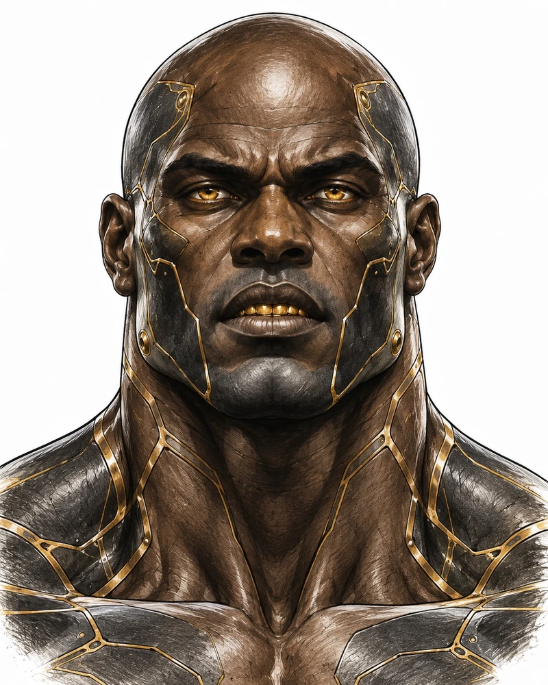

[ The One Above ]
You move.
He follows.
Move your cursor across the portrait.Touch and drag across the portrait.
Give him a direction. Hold his gaze.
[ Try this ]
Turn off Head turn. Move across the portrait and watch only the eyes follow. Turn off Eye tracking to isolate the head.
A 2.5D study using the existing September 30 head portrait. Small turns, mesh eyelids and local chest movement. No video in this study.
[ Preparing portrait ]

Drag or move your pointer to turn the head. With the portrait focused, use arrow keys to look around, B to blink, and Home to center. The direction buttons below also work.
[ Direction ]
[ Original artwork ]
[ Live interaction ]